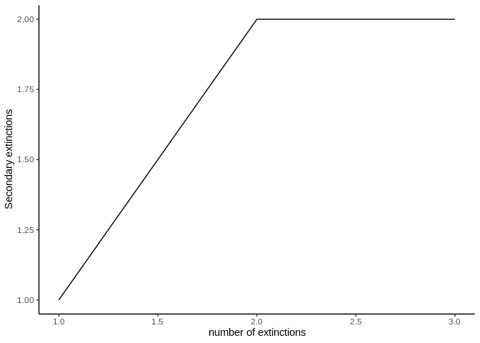
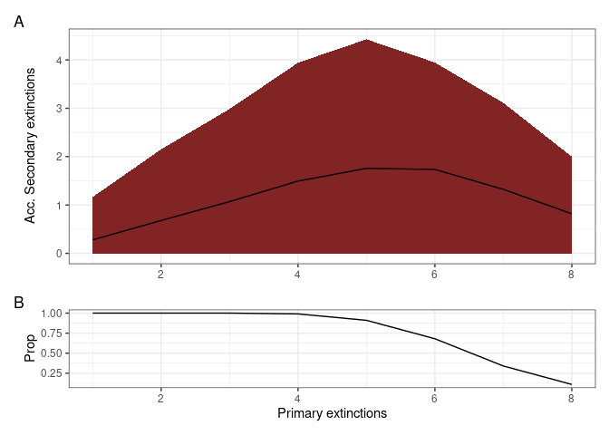
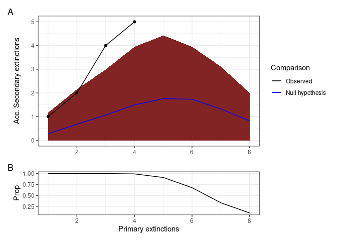
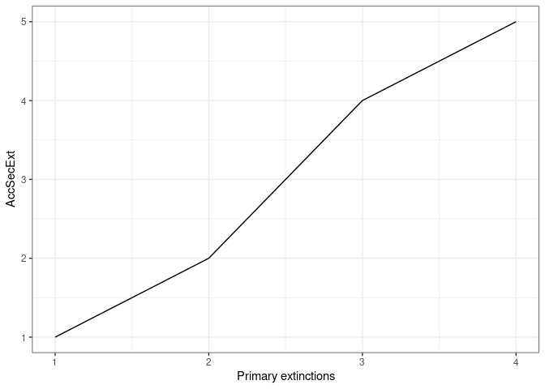
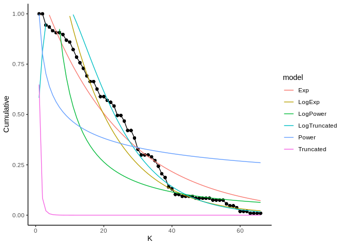

pkgdown 
The goal of NetworkExtinction is to Simulate the extinction of species in the food web and to analyze its cascading effects, as described in Dunne et al. (2002)
Installation
You can install the released version of NetworkExtinction from CRAN with:
install.packages("NetworkExtinction")And the development version from GitHub with:
# install.packages("devtools")
devtools::install_github("derek-corcoran-barrios/NetworkExtintion")Extinctions functions
Extinctions from most to less conected species in the network
The Mostconnected function sorts the species from the most connected node to the least connected node, using total degree. Then, it removes the most connected node in the network, simulating its extinction, and recalculates the topological indexes of the network and counts how many species have indegree 0 (secondary extinction), not considering primary producers. Then, it removes the nodes that were secondarily extinct in the previous step and recalculates which node is the new most connected species. This step is repeated until the number of links in the network is zero (Sole and Montoya 2001; Dunne, Williams, and Martinez 2002; Dunne and Williams 2009). In this new version it also calculates the Predatory release.
<<<<<<< HEAD
library(NetworkExtinction)
=======
library(NetworkExtinction)
>>>>>>> New_Version
data("net")
Mostconnected(Network = net)| Spp | nodesS | linksS | Conectance | LinksPerSpecies | Secondary_extinctions | Predation_release | isolated_nodes | AccSecondaryExtinction | NumExt | TotalExt |
|---|---|---|---|---|---|---|---|---|---|---|
| 6 | 9 | 7 | 0.0864198 | 0.7777778 | 1 | 0 | 1 | 1 | 1 | 2 |
| 7 | 7 | 4 | 0.0816327 | 0.5714286 | 0 | 2 | 2 | 1 | 2 | 3 |
| 5 | 6 | 2 | 0.0555556 | 0.3333333 | 1 | 3 | 3 | 2 | 3 | 5 |
| 2 | 4 | 0 | 0.0000000 | 0.0000000 | 1 | 3 | 4 | 3 | 4 | 7 |
Table 1: The resulting dataframe of the Mostconnected function
The result of this function is the dataframe shown in table 1. The first column called Spp indicates the order in which the species were removed simulating an extinction. The column Secondary_extinctions represents the numbers of species that become extinct given that they do not have any food items left in the food web, while the AccSecondaryExtinction column represents the accumulated secondary extinctions. (To plot the results, see function ExtinctionPlot.)
data("net")
history <- Mostconnected(Network = net)
#> [1] 1
#> [1] 2
#> [1] 3
#> [1] 4
ExtinctionPlot(History = history, Variable = "AccSecondaryExtinction")
Extinctions using a customized order
The ExtinctionOrder function takes a network and extinguishes nodes using a customized order. Then, it calculates the topological network indexes and the secondary extinctions.
data("net")
ExtinctionOrder(Network = net, Order = c(2,4,7))| Spp | nodesS | linksS | Conectance | Secondary_extinctions | Predation_release | AccSecondaryExtinction | NumExt | TotalExt |
|---|---|---|---|---|---|---|---|---|
| 2 | 9 | 8 | 0.0987654 | 1 | 0 | 1 | 1 | 2 |
| 4 | 7 | 5 | 0.1020408 | 1 | 0 | 2 | 2 | 4 |
| 7 | 5 | 3 | 0.1200000 | 0 | 1 | 2 | 3 | 5 |
Table 2: The resulting dataframe of the ExtinctionOrder function

The results of this function are a dataframe with the topological indexes of the network calculated from each extinction step (Table 2), and a plot that shows the number of accumulated secondary extinctions that occured with each removed node (Figure 4).
Random extinction
The RandomExtinctions function generates n random extinction orders, determined by the argument nsim. The first result of this function is a dataframe (table 3). The column NumExt represents the number of species removed, AccSecondaryExtinction is the average number of secondary extinctions for each species removed, and SdAccSecondaryExtinction is its standard deviation. The second result is a graph (figure 5), where the x axis is the number of species removed and the y axis is the number of accumulated secondary extinctions. The solid line is the average number of secondary extinctions for every simulated primary extinction, and the red area represents the mean ± the standard deviation of the simulations.
data(net)
RandomExtinctions(Network= net, nsim= 50)| NumExt | SdAccSecondaryExtinction | AccSecondaryExtinction |
|---|---|---|
| 1 | 0.4184520 | 0.220000 |
| 2 | 0.7623808 | 0.520000 |
| 3 | 0.9691149 | 0.860000 |
| 4 | 1.0821370 | 1.180000 |
| 5 | 1.1383841 | 1.530612 |
| 6 | 1.1946852 | 1.933333 |
| 7 | 1.1407225 | 2.176471 |
| 8 | 1.0681880 | 1.846154 |
| 9 | 1.3038405 | 1.800000 |
Table 3: The resulting dataframe of the RandomExtinctions function

###Comparison of Null hypothesis with other extinction histories
The RandomExtinctons function generates a null hypothesis for us to compare it with either an extinction history generated by the ExtinctionOrder function or the Mostconnected function. In order to compare the expected extinctions developed by our null hypothesis with the observed extinction history, we developed the CompareExtinctions function. The way to use this last function is to first create the extinction history and the null hypothesis, and then the CompareExtinctins function to compare both extinction histories.
data("net")
History <- ExtinctionOrder(Network = net, Order = c(1,2,3,4,5,6,7,8,9,10))
set.seed(2)
NullHyp <- RandomExtinctions(Network = net, nsim = 100)
Comparison <- CompareExtinctions(Nullmodel = NullHyp, Hypothesis = History)The first result will be a graph (Figue 6) with a dashed line showing the observed extinction history and a solid line showing the expected value of secondary extinctions randomly generated.
The second result will be a Test object which will show the goodness of fit statistics of the comparison. In this case, since the p value is 0.22 which is larger than 0.05, we consider that the generated extinction history is significantly different than the null hypothesis.

Comparison$Test
#>
#> Pearson's Chi-squared test
#>
#> data: Hypothesis$DF$AccSecondaryExtinction and Nullmodel$sims$AccSecondaryExtinction[1:length(Hypothesis$DF$AccSecondaryExtinction)]
#> X-squared = 20, df = 16, p-value = 0.2202Plotting the extinction histories of a network
The ExtinctionPlot function takes a NetworkTopology class object and plots the index of interest after every extinction. By default, the function plots the number of accumulated secondary extinctions after every primary extinction (Figure 7), but any of the indexes can be ploted with the function by changing the Variable argument (Figure 8).
data(net)
history <- Mostconnected(Network = net)
#> [1] 1
#> [1] 2
#> [1] 3
#> [1] 4
ExtinctionPlot(History = history)
ExtinctionPlot(History = history, Variable = "LinksPerSpecies")
Degree distribution function
The degree_distribution function calculates the cumulative distribution of the number of links that each species in the food network has (Estrada 2007). Then, the observed distribution is fitted to the exponential and power law distribution models.
The results of this function are shown in figure 9 and table 4. The graph shows the observed degree distribution in a log log scale fitting the three models mentioned above, for this example we use an example dataset of Chilean litoral rocky shores (Kéfi et al. 2015). The table shows the fitted model information ordered by descending AIC, that is, the model in the first row is the most probable distribution, followed by the second an finally the third distribution in this case (Table 3), the Exponential distribution would be the best model, followed by the Power law and finally the Truncated power law model.
data("chilean_intertidal")
<<<<<<< HEAD
degree_distribution(chilean_intertidal)
| logLik | AIC | BIC | model | Normal.Resid | family |
|---|---|---|---|---|---|
| 83.14753 | -160.29506 | -153.63654 | Exp | No | Exponential |
| 13.38647 | -20.77293 | -14.20397 | Power | No | PowerLaw |
Table 4: Model selection analysis
The main objective of fitting the cumulative distribution of the degrees to those models, is to determine if the vulnerability of the network to the removal of the most connected species is related to their degree distribution. Networks that follow a power law distribution are very vulnerable to the removal of the most connected nodes, while networks that follow exponential degree distribution are less vulnerable to the removal of the most connected nodes (Albert and Barabási 2002; Dunne, Williams, and Martinez 2002; Estrada 2007; Santana et al. 2013).
Bibliography
Albert, Réka, and Albert-László Barabási. 2002. “Statistical Mechanics of Complex Networks.” Reviews of Modern Physics 74 (1). APS: 47.
Dunne, Jennifer A, and Richard J Williams. 2009. “Cascading Extinctions and Community Collapse in Model Food Webs.” Philosophical Transactions of the Royal Society B: Biological Sciences 364 (1524). The Royal Society: 1711–23.
Dunne, Jennifer A, Richard J Williams, and Neo D Martinez. 2002. “Food-Web Structure and Network Theory: The Role of Connectance and Size.” Proceedings of the National Academy of Sciences 99 (20). National Acad Sciences: 12917–22.
Estrada, Ernesto. 2007. “Food Webs Robustness to Biodiversity Loss: The Roles of Connectance, Expansibility and Degree Distribution.” Journal of Theoretical Biology 244 (2). Elsevier: 296–307.
Kéfi, Sonia, Eric L Berlow, Evie A Wieters, Lucas N Joppa, Spencer A Wood, Ulrich Brose, and Sergio A Navarrete. 2015. “Network Structure Beyond Food Webs: Mapping Non-Trophic and Trophic Interactions on Chilean Rocky Shores.” Ecology 96 (1). Wiley Online Library: 291–303.
Santana, Charles N de, Alejandro F Rozenfeld, Pablo A Marquet, and Carlos M Duarte. 2013. “Topological Properties of Polar Food Webs.” Marine Ecology Progress Series 474: 15–26.
Sole, Ricard V, and M Montoya. 2001. “Complexity and Fragility in Ecological Networks.” Proceedings of the Royal Society of London B: Biological Sciences 268 (1480). The Royal Society: 2039–45.